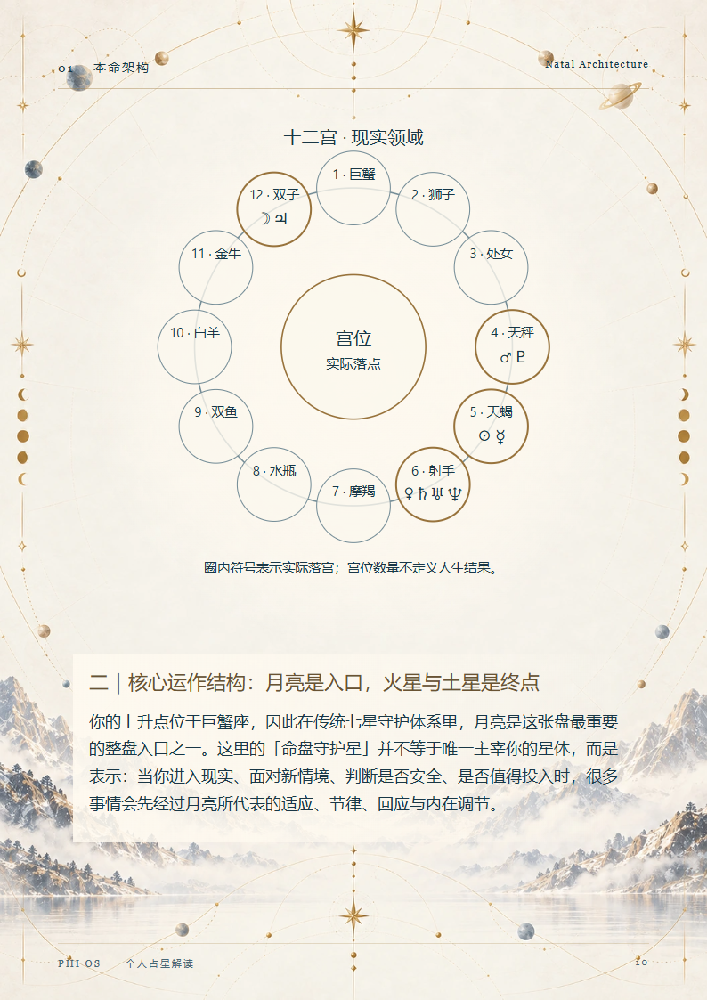
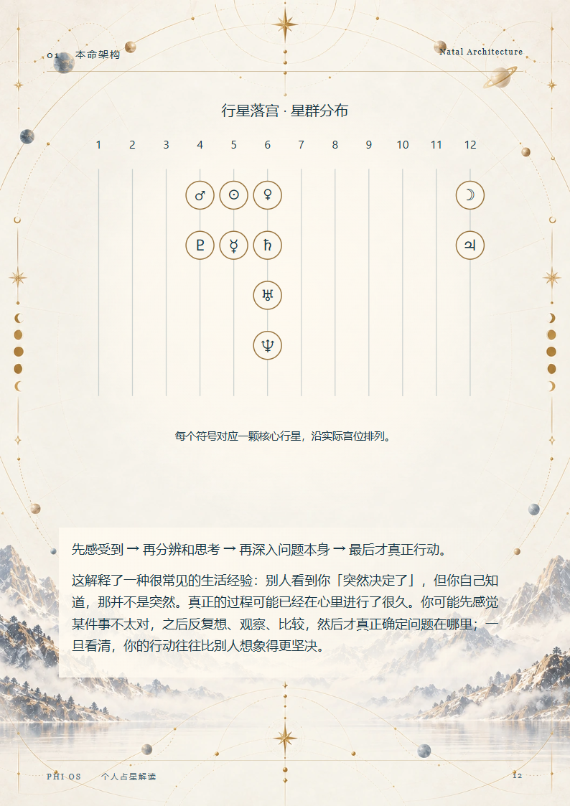
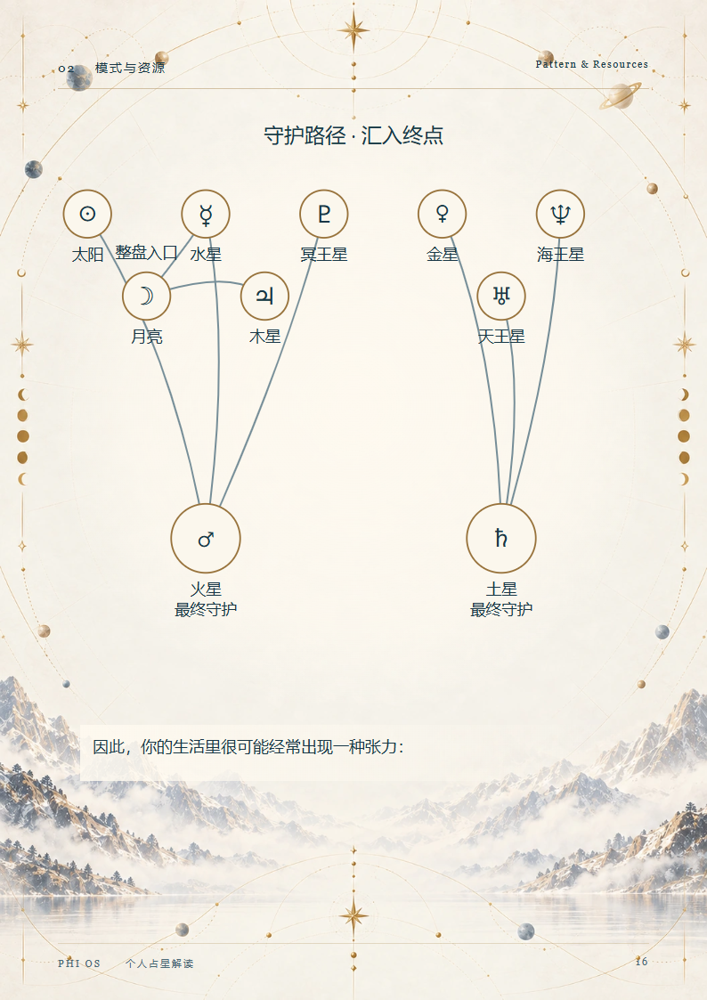
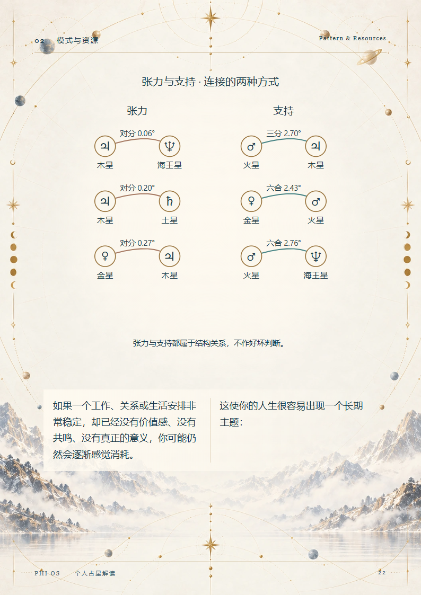
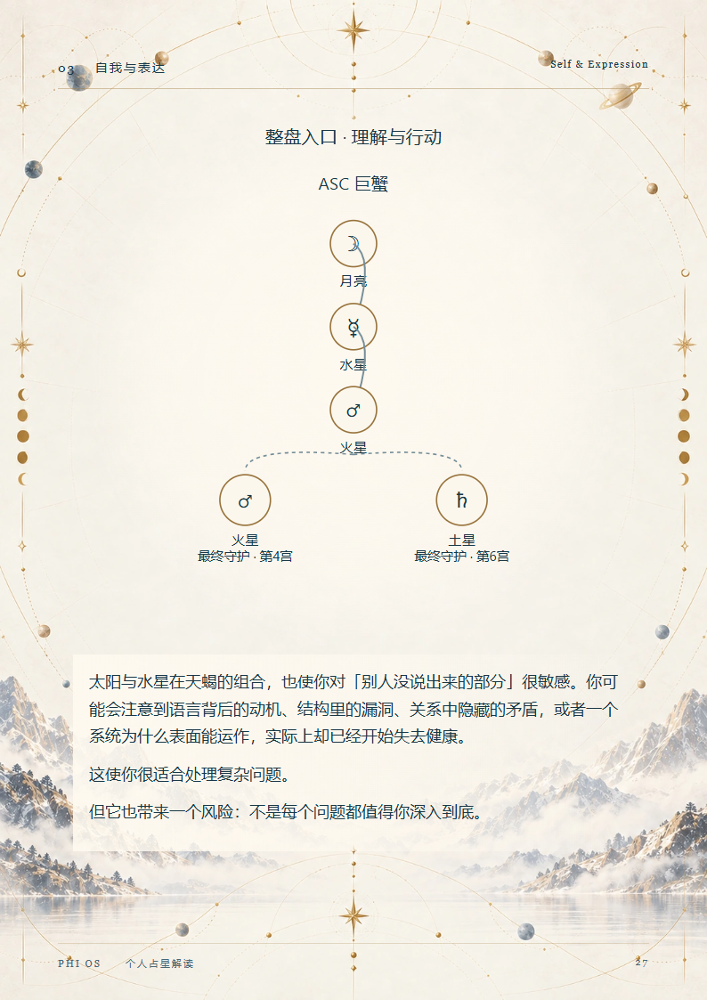
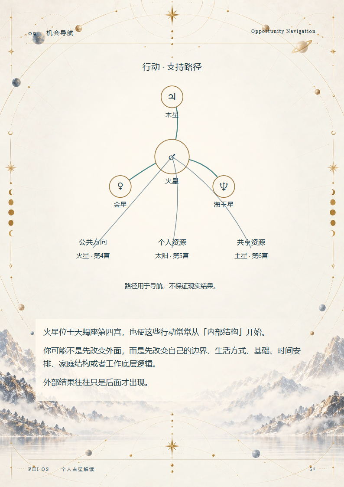

占星图表 · 全部实际输出
AST-D01 · 8
AST-D02 · 10

AST-D03 · 12

AST-D04 · 16

AST-D05 · 18
AST-D06 · 20
AST-D07 · 22

AST-D08 · 27

AST-D09 · 31
AST-D10 · 35
AST-D11 · 39
AST-D12 · 43
AST-D14 · 51

AST-D15 · 54